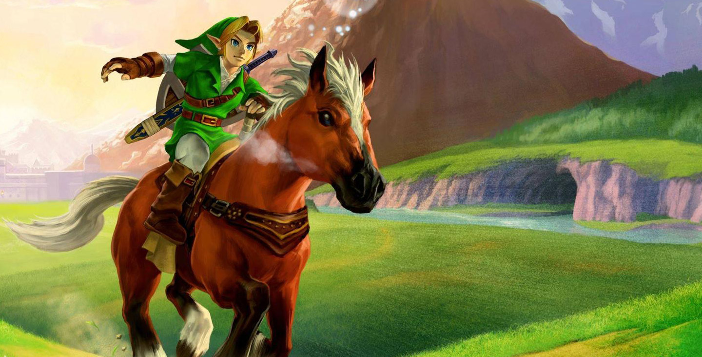

Legend of Zelda Ocarina of Time:
¿Por qué sigue siendo uno de los mejores videojuegos de todos los tiempos?
Escrito por Diego Medina
Hace 2 días
Es la década de los 90's. El lanzamiento de la consola Nintendo 64, de la compañía japonesa, Nintendo, prometía ser la nueva máquina enriquecedora de entretenimiento de una de las compañías más grandes de videojuegos; y junto a este lanzamiento, se esperarían grandes adquisiciones en el mundo de los videojuegos.
Legend of Zelda: Ocarina of Time no fue la excepción. Tras ser uno de los lanzamientos más esperados de la serie aclamada del mismo nombre, y ser el primer juego dentro de la franquicia utilizando la nueva tecnología 3D que proporcionaba la nueva consola; los fans estaban más que regocijantes de emoción al poder experienciar las nuevas hazañas que traería este título.
En su momento, este título fue el juego en desarrollo más grande en la existencia del sector del mundo de los videojuegos, y no la tenía fácil. Siendo desarrollado concurrentemente con otros dos legendarios títulos: Super Mario 64 y Mario Kart 64, Legend of Zelda estaba originalmente planeado en ser desarrollado para la extensión de la consola con una capacidad de 64MB, el cuál luego fué reducido a 32MB dados los límites en capacidad de memoria de los mismos cartuchos. 11
Desarrollado por un equipo de producción de más de 200 empleados, el videojuego tenía las posibilidades en su contra. Con un presupuesto excesivo de $12 millones de dólares 12, con las limitantes en términos de hardware que la consola podía soportar, con diversos problemas de calendarización y avances, The Legend of Zelda Ocarina of Time rompió todas las expectativas, y su lanzamiento fué el más exitoso de ese año en diversos países. Hasta la fecha, el videojuego es considerado un suceso comercial despampanante, superando las 8 millones de copias a nivel internacional, lo cuál equivale a aproximadamente seiscientos cuarenta millones de dólares en cálculos de inflación a la fecha del 2020. 14
Pero Ocarina of Time no solo fue un éxito monetario. Hasta la fecha del día de hoy, es considerado una maravilla tecnológica y titulado cómo uno de los mejores videojuegos de todos los tiempos. Ha sido el tema de raíz de muchos profesionales en el sector de entretenimiento de cómo es que llegó a ser uno de los títulos más icónicos no sólo para la plataforma de Nintendo, si no, de todas las plataformas por venir.

Imágen conceptual del arte del videojuego.
En primera instancia, Ocarina of Time popularizó el término que se conoce hoy en día cómo “open-world”, si bien, no era el progenitor de esta mecánica, fue uno de los impulsantes en popularizarla. Este término quiere decir que el jugador era libre de explorar las áreas vastas dentro del mundo del videojuego, sin necesariamente tener que seguir su completación lineal. El jugador era libre de atravesar los campos de Hyrule, visitar el pueblo de Kakariko, o nadar en las aguas del Lago Hylia sin tener que estar restringido a estos por la historia del juego. Otros títulos dentro de la saga de Legend of Zelda ya había empleado este mecanismo desde antes, pero lo que de verdad le dio sentimiento al videojuego fueron las texturas, profundización y dirección artística que se podía llevar a cabo gracias a la tecnología 3D.
Las mecánicas que el jugador tenía a su disposición tampoco eran revolucionarias. El jugador contaba con acciones simples de movimiento, de ataque e inclusive de interpretación, pero lo que las impulsaban eran sus interacciones con los demás elementos presentes en el videojuego. Tenía un diseño de interfaz muy simple de entender a raíz, el jugador tenía una ventana de equipamiento, la cuál podía asignar a los diferentes botones de su control para utilizar dicho equipamiento en cualquier circunstancia. Los diversos conceptos de los equipamientos que el jugador podía utilizar a lo largo de su aventura varían con la decisión del jugador. ¿Querías derrotar a tus enemigos con espada, flechas o inclusive con palos de madera? Podías hacerlo. ¿Querías atravesar los campos a pie, con el equipamiento del tiro de gancho, con tu caballo, o inclusive nadando? Podías hacerlo. Las posibilidades en su momento eran muy extensas, existían muchas maneras de completar el juego, , pero la mecánica más importante que nace a través del título del mismo, era la posibilidad de viajar en el tiempo, y ver los efectos que este viaje tenía en el contexto de la historia. Esto era revolucionario en su momento, si bien ya existían otras piezas de entretenimiento que profundizaron en el tema del viaje en el tiempo, Ocarina of Time era de los pocos que lo empleaban en un contexto de videojuego, siendo mismamente manipulable por el jugador.
Imágen de la interfaz del jugador.
En términos de diseño conceptual, a primera vista, el videojuego parecía tener una historia narrativa bastante directa. Un antagonista principal que debía ser retenido por el héroe de la historia (el jugador en este caso), pero la realidad es que existen muchas capas de simbolismo folclórico japonés dentro de esta misma narrativa. 4 Hablando del concepto del juego, podría interpretarse cómo la aventura de un agente de cambio, auxiliado por diversos entes de la naturaleza en busca de la declinación de la destrucción de su mundo, no obstante, la historia era bastante simple para que la audiencia principal, que en la mayoría eran personas jóvenes, pudieran entenderla, pero lo suficientemente compleja para ser entendida una vez reflexionada.
Claramente le debemos un gran enfoque en este artículo a la extraordinaria pieza musical compuesta por Koji Kondo, el director del soundtrack del videojuego. Con sus piezas musicales armoniosas, logró darle una capa artística aún mayor al videojuego. Las diferentes secciones del mundo daban a escuchar al usuario una nueva melodía, la cuál era pertinente a las interacciones y hecho de ese pequeño rincón. Las piezas melódicas de los templos de agua eran acompañadas por el sonido ligero de las arpas y suaves flautas, por otro lado, el sonido fuerte, rocoso y desértico de los alpinos de la Montaña de la Muerte eran densos, con repeticiones tambores y ritmos altos. Muchos de los fans argumentan que este arreglo musical es uno de los más reconocidos a nivel internacional y es algo que hasta hoy en día sigue jalando a los antiguos jugadores a volver a experienciar su infancia con los sonidos melancólicos del videojuego.
A pesar de las maravillosas hazañas que el juego logró endurecer en su pequeña ventana de producción, Ocarina of Time resultó ser un producto con bastantes bugs, errores de texturización, sistemas de luces, problemas de optimización, accesibilidad y jugabilidad, sin embargo, con todos los precedentes que apuntaban en contra del juego, logró cautivar los millones de usuario que en su época disfrutaron hasta el último momento de tal maravilla de videojuego, que hasta hoy en día, se clasifica cómo uno de los mejores videojuegos de todos los tiempos.
Contenido Reciente


Comentarios

Mario Alberto C.
No me gustó mucho como redactaron algunas cosas, la verdad espero algo mejor en el futuro, saludos, echenle ganas.

Elizabeth Mateo Sanz
amé!! me encanta este tipo de contenido!! ojalá puedan hacer más, me voy a suscribir.
Jorge Ignacio Palo
Me encantó la redacción de esté posteo, múy bien hecho y fundamentado.
Soy su fan.